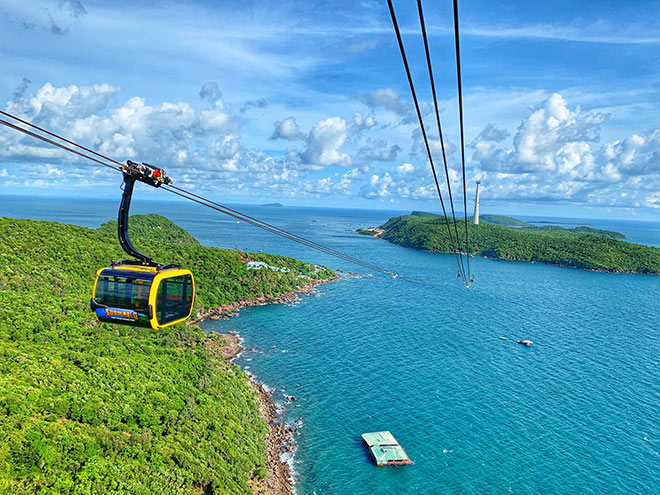
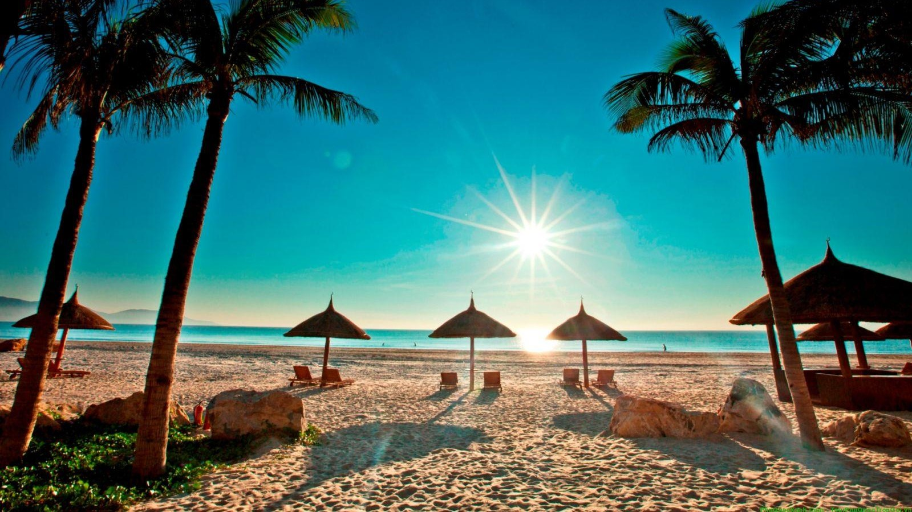
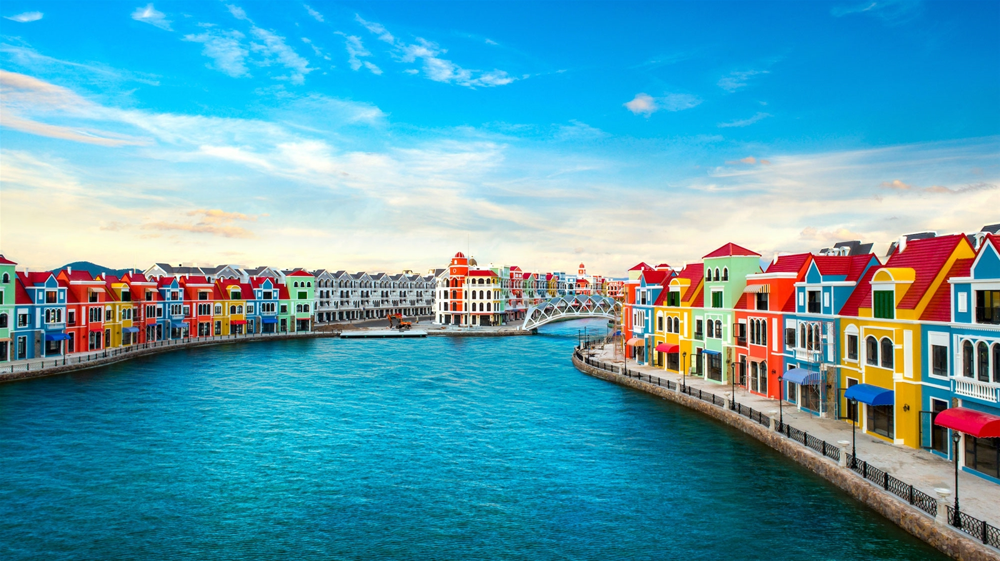
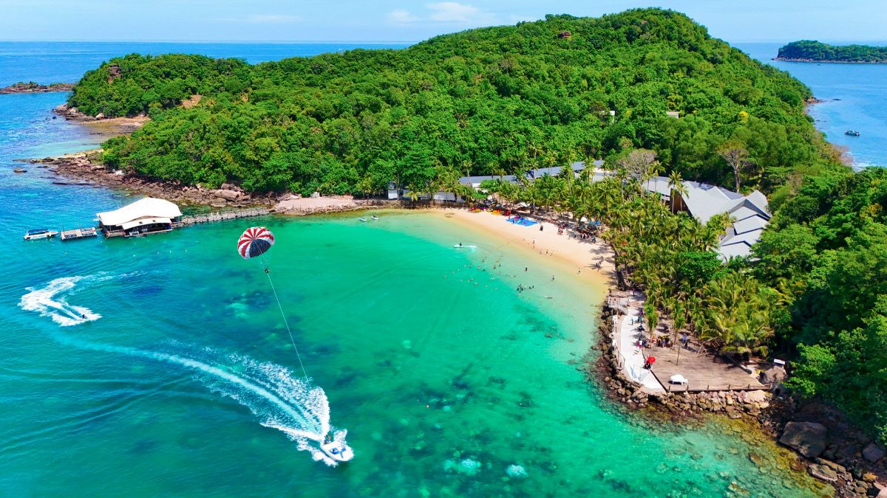
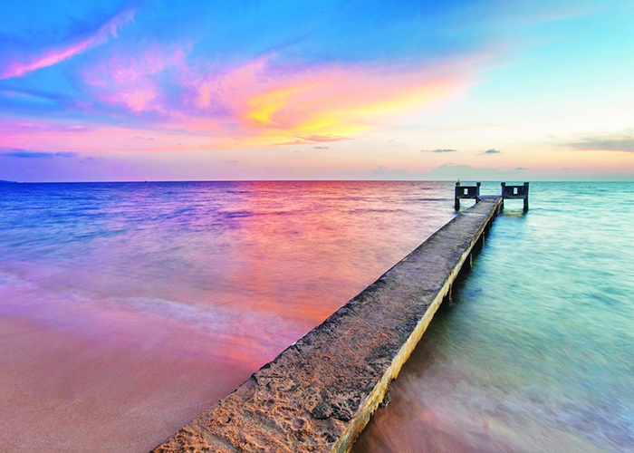
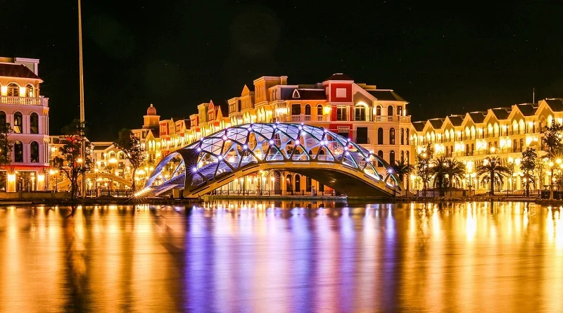

Du khách nên ghé thăm các bãi biển nổi tiếng như Bãi Dài, Bãi Sao, Bãi Trường để tắm biển, thư giãn và thưởng ngoạn cảnh quan tuyệt đẹp.
Bạn cũng có thể tham gia các tour đảo nhỏ, lặn biển ngắm san hô và trải nghiệm các hoạt động thể thao nước sôi động.
Các điểm tham quan nổi bật gồm VinWonders Phú Quốc, Vinpearl Safari, làng chài Hàm Ninh và chợ đêm Dinh Cậu.
Ẩm thực Phú Quốc hấp dẫn với hải sản tươi sống, nước mắm truyền thống và các món đặc sản như gỏi cá trích, bún kèn.
Phú Quốc có lịch sử lâu đời gắn với nghề đánh bắt hải sản và làm nước mắm truyền thống.
Di tích nhà tù Phú Quốc phản ánh quá khứ chiến tranh, là nơi tìm hiểu lịch sử cách mạng Việt Nam.
Văn hóa địa phương là sự kết hợp giữa các cộng đồng dân cư ven biển và các lễ hội truyền thống như lễ cúng cá voi.
Đời sống của ngư dân và làng chài truyền thống vẫn được duy trì, tạo nên nét văn hóa đặc trưng riêng của đảo.
Phú Quốc nổi bật với cảnh quan thiên nhiên hoang sơ, rừng nguyên sinh Phú Quốc National Park và biển xanh cát trắng trải dài.
Hệ sinh thái đa dạng với rạn san hô phong phú và nhiều loài động thực vật quý hiếm.
Hồ Dương Đông, suối Tranh và các mũi đất như Mũi Gành Dầu tạo nên khung cảnh phong phú và hấp dẫn.
Bình minh và hoàng hôn trên đảo mang đến trải nghiệm thư giãn và đầy cảm xúc.
Phú Quốc có khí hậu nhiệt đới gió mùa, thuận lợi để du lịch quanh năm, với mùa khô từ tháng 11 đến tháng 4 là thời điểm lý tưởng.
Người dân thân thiện, hiền hòa và gắn bó với nghề biển truyền thống.
Sự mến khách kết hợp với thiên nhiên hoang sơ tạo nên trải nghiệm du lịch đáng nhớ cho du khách.





